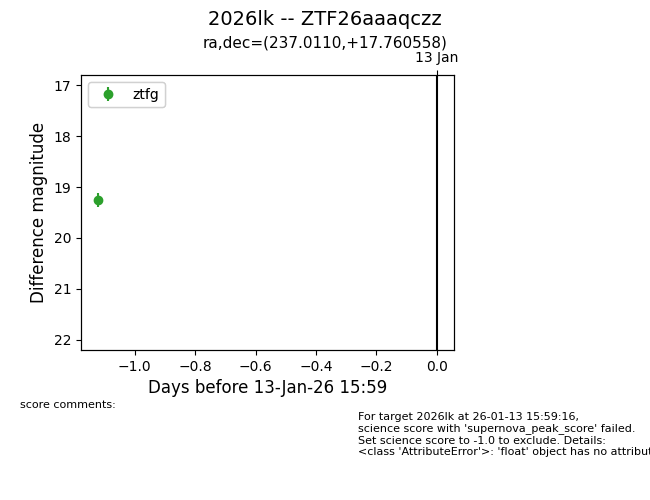
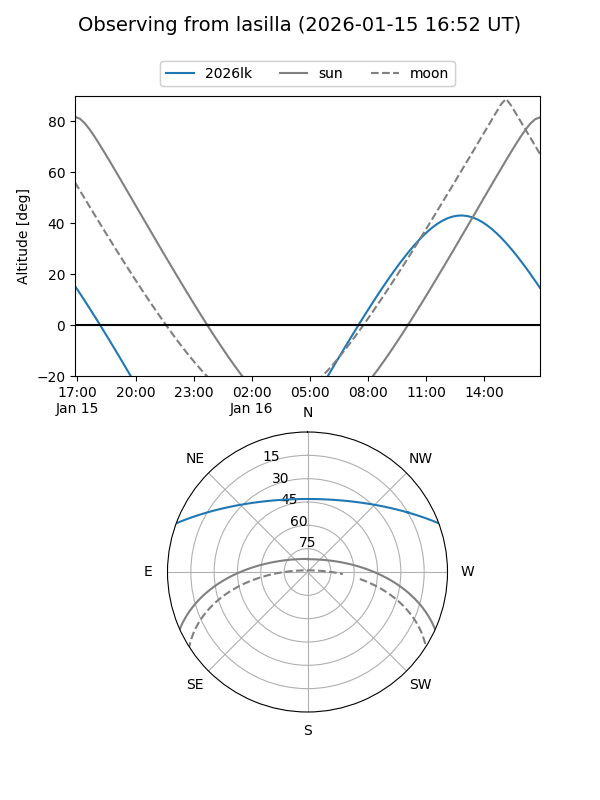
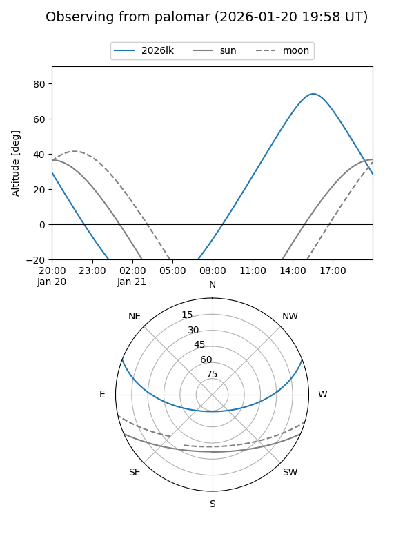
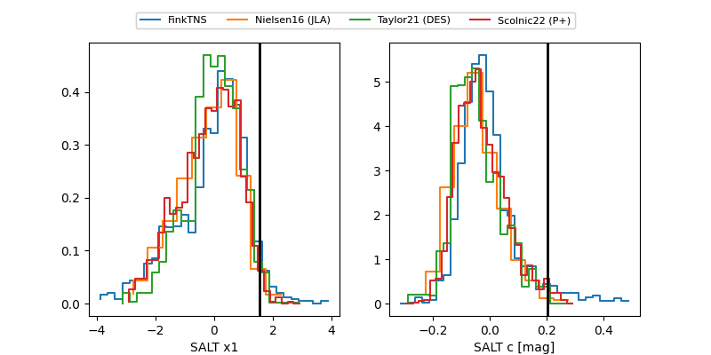

2026lk
Target 2026lk at 2026-01-13 08:55
Aliases and brokers:
FINK: link
Lasair: link
ALeRCE: link
TNS: link
YSE: link
alt names
ZTF26aaaqczz (ztf,fink_ztf)
2026lk (tns,yse)
Coordinates:
equatorial (ra, dec) = 237.0110,+17.76056
equatorial (HMS+DMS) = 15:48:02.65,+17:45:38.01
galactic (l, b) = (29.4732,+48.35059)
Flags:
Photometry:
last ztfg=19.25
1 ztfg detections
Lightcurve

Visibility


Additional plots
